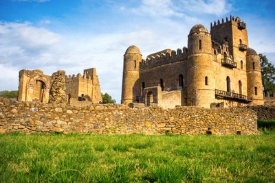
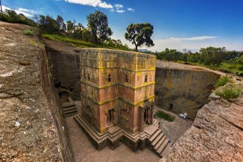
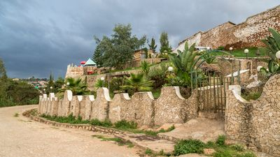
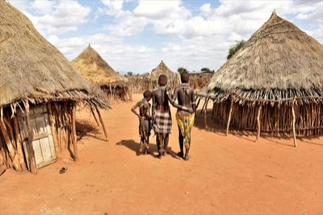
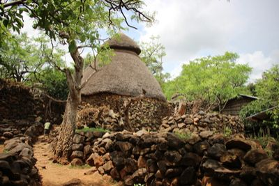

Ethiopia’s cities contain a wealth of exciting attractions and festivities for tourists to explore, such as the unique Meskel True Cross celebration in Addis Ababa. However, to really delve into the culture and history, visitors should head to the countryside to explore some of the many stunning World Heritage attractions in Ethiopia.
Many of these protected locations not only contain clues to decipher Ethiopia’s past, but also to help us understand the history of the entire world and our evolution as a species. In order to travel to Ethiopia and discover the impressive UNESCO heritage sites, most foreign nationalities require a visa for Ethiopia to enter the country.
What Are the Must Visit World Heritage Sites in Ethiopia?
There are a total of 9 UNESCO World Heritage attractions in Ethiopia, 8 cultural sites and one natural conservation area, the Simien National Park, home to a range of native endangered animals such as the Gelada baboon and the Ethiopian wolf. The most impressive Ethiopian World Heritage sites are scattered along the central length of the country, from the ancient ruins of Axum in the north to the Omo Valley archeological sites in the south.
Visit Axum, Ethiopia’s Ancient Kingdom
Located close to Ethiopìa’s recently reopened border with Eritrea in the extreme north of the country, these ancient ruins represent the last remains of the powerful Aksumite kingdom, which dominated the area from the 1st to the 8th centuries AD. Alternatively known as Aksum, this impressive Ethiopian World Heritage site boasts a variety of intriguing artifacts, most notably the towering monolithic obelisks (up to 23 meters high) that dominate the area.
Many tourists visit Aksum in search of the Ark of the Covenant, the Biblical artifact which is said to have been brought to Ethiopia by the son of the Queen of Sheba and held under guard near the Church of Our Lady Mary of Zion in this ancient city.
Travel to Gondar
Why visit Gondar? Nicknamed ‘the Camelot of Ethiopia’, this city near Lake Tana in the northwest is home to the ruins of the fortress-city of Fasil Ghebbi, the residence of Ethiopia’s emperors during the 16th and 17th centuries.
The compound is surrounded by an ancient 900 meter-long wall and boasts the well-preserved remains of various royal castles in the unique Nubian style. Visitors often feel as though they’ve been transported back to Medieval Europe (without leaving Africa!).
Marvel at the Rock-Hewn Churches of Lalibela
One of the first World Heritage sites in Ethiopia to be added to the UNESCO list, in 1978, the rock-cut churches of Lalibela can be found close to this holy city in the north of Ethiopia. This series of jaw-dropping monolithic churches were carved directly into a rocky cliff face between the 12th and 13th century.
The Lalibela churches are considered a place of holy pilgrimage in Ethiopia, and visitors should at least pay a visit to St. George’s Cathedral, the best-preserved specimen, which is said to have been built on orders from none other than God himself.
Stroll around Harar Jugol, the Fortified Historic Town
Found close to the border with Somalia in the east of the country, this sacred holy city is surrounded by 13-century fortified walls and boasts over 82 mosques, 3 of which date back as far as the 10th century. However, this historic city really earns its World Heritage site status through the intricately designed merchant townhouses that reflects the diversity of this long-time trading post.
Don’t leave Harar without visiting the cultural center dedicated to famous French poet Arthur Rimbaud, who once made his home in the city, or attending a night-time hyena feeding show just outside the ancient walls.
Explore the Lower Awash Valley
The Lower Awash Valley, around 300 kilometers north of Addis Ababa, is one of the most important UNESCO World Heritage sites in Ethiopia. Some of the most significant paleoanthropological discoveries on the African continent have been made in the area, some dating back as much as 3 million years.
These include the unearthing of the bones of Lucy, an early human whose discovery has greatly boosted theories of evolution. A replica of Lucy’s skeleton can now be seen in the National Museum of Ethiopia in Addis Ababa, but it’s worth paying a visit to the site anyway to explore the ongoing excavations. You might even find a fossil or two yourself.
Uncover the Tiya Archeological Site
Just a two-hour drive south of Addis Ababa, this Ethiopian World Heritage attraction could give the famous Stonehenge in England a run for its money.
It’s home to the Tiya megaliths of Ethiopia, a series of standing stones carved with cryptic symbols attributed to an ancient Ethiopian civilization. Although presumed to be of funerary significance, these stone structures remain a mystery, so it’s fun to visit to try to figure out what they mean for yourself.
Meet the Lower Omo Valley Tribes
If you’ve ever been curious about experiencing a completely different way of life to much of the western world, then the Lower Omo Valley is a must visit in Ethiopia. It’s home to a variety of indigenous tribes, and visitors can take a tour of the traditional settlements and get to know the local customs.
This UNESCO World Heritage attraction also includes the Konso and Fejej paleontological research locations, where ancient stone tools and fossils supporting theories of human evolution have also been uncovered.
Savor the Konso Cultural Landscape
Whereas many of the UNESCO World Heritage sites in Ethiopia are remnants of the country’s distant past, visitors can experience real living history at the Konso Cultural Landscape. This 55km2 area in the far south of Ethiopia, near the border with Kenya, is full of striking traditional villages built on extensive dry stone terraces used for agriculture, a living cultural tradition that stretches back over 400 years and 21 generations.
One of the standout features of the area is the daga-hela, large stone megaliths that continue to be constructed and used in rituals by the native Konso tribespeople, as well as the waka, anthropomorphic wooden statues the Konso erect to commemorate the deceased.
If you feel like exploring these incredible World Heritage attractions in Ethiopia, don’t forget to first check if you require a tourist visa for Ethiopia before your trip.